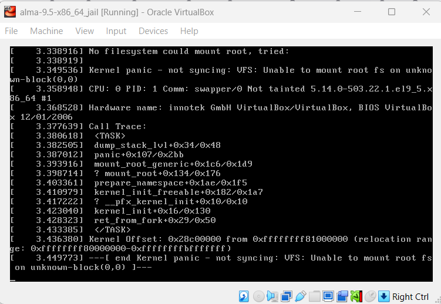
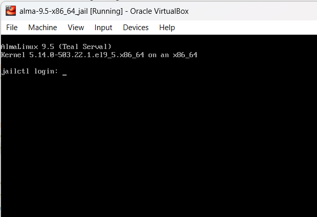

The initial ram filesystem (initramfs) is used at the GRUB stage during the Linux boot process.
The older mechanism is the Initial Root Disk (initrd) also called Initial RAM Disk is no longer used by modern Linux systems, initrd is a fully fledged block device that is mounted by the kernel whereas initramfs is unpacked into a temporary filesystem and does not have the overhead of an entire filesystem.
Both of these have the same function, to mount the root filesystem. On encrypted disks the initial filesystem will decrypt the root filesystem and then mount it. It can also be configured to perform additional checks before mounting.
It is sometimes necessary to rebuild the initramfs when a linux system is not booting e.g. After making an OS upgrade, compiling a new kernel, etc.
In this article we will practice a recovery scenario using dracut; a low level tool used for creating initramfs/initrd images.
NB: Only perform this scenario in a controlled environment i.e. virtual machines created for testing purposes.
Table of contents
- Table of contents
- Breaking the system by removing initramfs file
- Booting from a live OS
- Mounting root and boot filesystems
- Mounting special devices
- Change root directory
- Using dracut to regenerate initramfs
- Closing thoughts
Breaking the system by removing initramfs file
We will be using Alma Linux 9.5 (alma-9.5-x86_64) on this lab, and Finnix as our rescue/live iso since it is lightweight and it is specifically made to be a utility live Linux distribution.
Lets start by removing initramfs files inside /boot directory:
msoto$ rm -f /boot/initramfs-$(uname -r).img
And reboot the machine. After the grub screen we should see a kernel panic and some messages related to missing initramfs and failure to mount the root filesystem.
As in my article on troubleshooting grub, we now have a system that will not boot on its own. And requires some troubleshooting.
Lets try to fix it now.
These are the steps we need to perform:
- Boot from a live OS
- Mount the VM root and boot filesystems
- Mount additional special filesystems:
dev,procandsys - Change root directory of the current shell into the temporary mountpoint
- Regenerate GRUB configuration file
1. Boot from a live OS
First insert the Finnix iso image into the virtual Optical Drive device on your virtual machine manager.You should now be able to reboot into the live Finnix OS.
2. Mounting root and boot filesystems
Executelsblk to show all available block devices.If you used LVM the name of the volumes may reveal where the root partition is, if not, you can temporarily mount filesystems and list the files on it until you find the root partition.
root@tty1:~# lsblk
NAME MAJ:MIN RM SIZE RO TYPE MOUNTPOINTS
loop0 7:0 0 420.6M 1 loop /usr/lib/live/mount/rootfs/filesystem.squashfs
/run/live/rootfs/filesystem.squashfs
sda 8:0 0 8G 0 disk
├─sda1 8:1 0 1G 0 part
└─sda2 8:2 0 7G 0 part
├─almalinux-swap 254:0 0 820M 0 lvm
└─almalinux-root 254:1 0 6.2G 0 lvm
sr0 11:0 1 498M 0 rom /usr/lib/live/mount/medium
/run/live/medium
zram0 252:0 0 987M 0 disk [SWAP]
From the output above we can see that the root partition is probably located in
/dev/sda2 in the almalinux-root logical volume.Lets create a chroot directory under
mnt and mount the root filesystem there:
root@tty1:~# mkdir /mnt/rootdir
root@tty1:~# vgs
VG #PV #LV #SN Attr VSize VFree
almalinux 1 2 0 wz--n- <7.00g 0
root@tty1:~# vgchange almalinux -ay
2 logical volume(s) in volume group "almalinux" now active
root@tty1:~# lvs
LV VG Attr LSize Pool Origin Data% Meta% Move Log Cpy%Sync Convert
root almalinux -wi-a----- <6.20g
swap almalinux -wi-a----- 820.00m
root@tty1:~# mount /dev/almalinux/root /mnt/rootdir/
root@tty1:~#
At this moment if you tried to list the files in /mnt/rootdir/boot/ it would be empty, so we need to find the partition with the boot filesystem.
root@tty1:~# ls -l /mnt/rootdir/boot/
total 0
We can use fdisk to find the boot partition
root@tty1:~# fdisk -l /dev/sda
Disk /dev/sda: 8 GiB, 8589934592 bytes, 16777216 sectors
Disk model: VBOX HARDDISK
Units: sectors of 1 * 512 = 512 bytes
Sector size (logical/physical): 512 bytes / 512 bytes
I/O size (minimum/optimal): 512 bytes / 512 bytes
Disklabel type: dos
Disk identifier: 0x54607dec
Device Boot Start End Sectors Size Id Type
/dev/sda1 * 2048 2099199 2097152 1G 83 Linux
/dev/sda2 2099200 16777215 14678016 7G 8e Linux LVM/dev/sda1 is marked as boot parition.root@tty1:~# mount /dev/sda1 /mnt/rootdir/boot/
root@tty1:~# ls -l /mnt/rootdir/boot/
total 148232
-rw-r--r--. 1 root root 226249 Jan 24 09:04 config-5.14.0-503.22.1.el9_5.x86_64
drwxr-xr-x. 3 root root 17 Feb 3 04:13 efi
drwx------. 5 root root 97 Feb 3 04:23 grub2
-rw-------. 1 root root 79150037 Feb 3 04:21 initramfs-0-rescue-d2d776c2dc0d4e50a45b214400ccb34b.img
-rw-------. 1 root root 34586112 Apr 5 20:00 initramfs-5.14.0-503.22.1.el9_5.x86_64kdump.img
drwxr-xr-x. 3 root root 21 Feb 3 04:15 loader
lrwxrwxrwx. 1 root root 52 Feb 3 04:16 symvers-5.14.0-503.22.1.el9_5.x86_64.gz -> /lib/modules/5.14.0-503.22.1.el9_5.x86_64/symvers.gz
-rw-------. 1 root root 8877138 Jan 24 09:04 System.map-5.14.0-503.22.1.el9_5.x86_64
-rwxr-xr-x. 1 root root 14467384 Feb 3 04:18 vmlinuz-0-rescue-d2d776c2dc0d4e50a45b214400ccb34b
-rwxr-xr-x. 1 root root 14467384 Jan 24 09:04 vmlinuz-5.14.0-503.22.1.el9_5.x86_64
3. Mounting special devices
At this point, we only need to mount special devices recursively:/dev/proc/sys
root@tty1:~# mount --rbind /dev/ /mnt/rootdir/dev/
root@tty1:~# mount --rbind /sys/ /mnt/rootdir/sys/
root@tty1:~# mount --rbind /proc/ /mnt/rootdir/proc/4. Change root directory
And we are ready tochroot
root@tty1:~# chroot /mnt/rootdir /bin/bash
[root@finnix /]# pwd
/
[root@finnix /]#$PS1 will change.5. Using dracut to regenerate initramfs
Now we can regenerate initramfs and optionally GRUB configuration as well:[root@finnix /]# dracut --regenerate-all
[root@finnix /]#
[root@finnix /]# ls -lt /boot/
total 182576
-rw------- 1 root root 35165094 Apr 5 15:02 initramfs-5.14.0-503.22.1.el9_5.x86_64.img
-rw-------. 1 root root 34586112 Apr 5 14:00 initramfs-5.14.0-503.22.1.el9_5.x86_64kdump.img
drwx------. 5 root root 97 Feb 2 22:23 grub2
-rw-------. 1 root root 79150037 Feb 2 22:21 initramfs-0-rescue-d2d776c2dc0d4e50a45b214400ccb34b.img
-rwxr-xr-x. 1 root root 14467384 Feb 2 22:18 vmlinuz-0-rescue-d2d776c2dc0d4e50a45b214400ccb34b
lrwxrwxrwx. 1 root root 52 Feb 2 22:16 symvers-5.14.0-503.22.1.el9_5.x86_64.gz -> /lib/modules/5.14.0-503.22.1.el9_5.x86_64/symvers.gz
drwxr-xr-x. 3 root root 21 Feb 2 22:15 loader
drwxr-xr-x. 3 root root 17 Feb 2 22:13 efi
-rw-r--r--. 1 root root 226249 Jan 24 03:04 config-5.14.0-503.22.1.el9_5.x86_64
-rw-------. 1 root root 8877138 Jan 24 03:04 System.map-5.14.0-503.22.1.el9_5.x86_64
-rwxr-xr-x. 1 root root 14467384 Jan 24 03:04 vmlinuz-5.14.0-503.22.1.el9_5.x86_64
[root@finnix /]#
[root@finnix /]# grub2-mkconfig -o /boot/grub2/grub.cfg
Generating grub configuration file ...
Adding boot menu entry for UEFI Firmware Settings ...
done
[root@finnix /]#Exit the chroot environment and reboot (don't forget to remove the .iso from the virtual optical drive).
The initramfs will be called by grub, the root filesystem should be mounted succesfully and the system should start normally:

Closing thoughts
In this article we explored how to repair a missing/broken initramfs file, the same steps can be followed to troubleshoot the older initrd file.
These steps are useful to troubeshoot and repair broken systems after an OS upgrade e.g. After upgrading RHEL 7.9 to 8.10 the following messages could be seen:
[ 979.529486] dracut[47039] * Stripping files done *
[ 979.534093] dracut[47039] * Creating image file '/boot/initramfs-3.10.0-1160.132.1.el7.x86_64.tmp' *
[ 1007.962783] dracut[47039] * Creating initramfs image file '/boot/initramfs-3.10.0-1160.132.1.el7.x86_64.tmp' done *
[ 1226.623324] systemd[1]: Stopping Journal Service...
[ 1226.632812] systemd[1]: systemd-tmpfiles-setup.service: Succeeded.
[ 1226.636823] systemd[1]: Stopped Create Volatile Files and Directories.
[ 1226.647293] systemd[1]: Stopped target Local File Systems.
[ 1226.653986] systemd[1]: systemd-sysctl.service: Succeeded.
[ 1226.657692] systemd[1]: Stopped Apply Kernel Variables.
[ 1226.664139] systemd[1]: Stopped target Local Encrypted Volumes.
[ 1226.670894] systemd[1]: Stopped target Slices.
[ 1226.676919] systemd[1]: Stopped target Sockets.
[ 1226.682819] systemd[1]: iscsiuio.socket: Succeeded.
[ 1226.886525] XFS (nvme0n1p2): Unmounting FilesystemThe system failed to boot. Although there were no errors during the creation of the initramfs, it was the last step executed before the problem. This led me to rebuild both the initramfs and GRUB configuration, which ultimately resolved the issue.